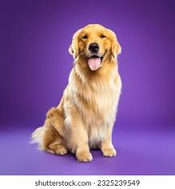

La vida de Riki
Ricki, nacido en Buenos Aires, específicamente en Quilmes, Argentina. Este canino es de color dorado y disfruta de dormir y jugar.
Ricki, un hermoso cachorro de pelaje dorado, llegó al mundo en un cálido día de verano en la ciudad de Quilmes, en la provincia de Buenos Aires, Argentina. Desde el principio, su pelaje brillante y su carácter amigable lo hicieron destacar entre sus hermanos y hermanas.

Ricki nació en una acogedora casa en un tranquilo barrio quilmeño, donde encontraría su hogar y su lugar en el mundo